함수 활용하기
매개변수를 포함한 함수 정의 및 호출 예제를 작성합니다.
반환값을 확인하는 콘솔 출력 스크린샷을 포함한 코드 파일을 제출합니다.
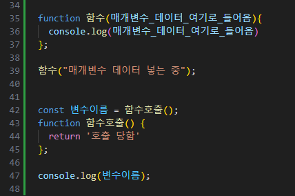
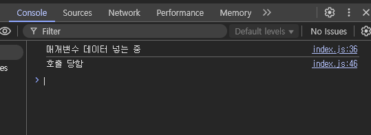
조건문과 반복문 활용하기
if-else, switch 조건문과 for, while 반복문을 사용해 프로그램을 작성합니다.
if-else, switch 조건문과 for, while 반복문을 사용한 프로그램 코드 파일과 실행 스크린샷을 제출합니다.
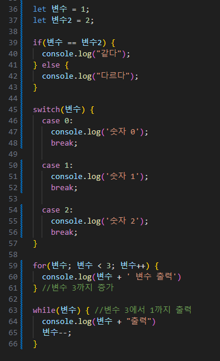
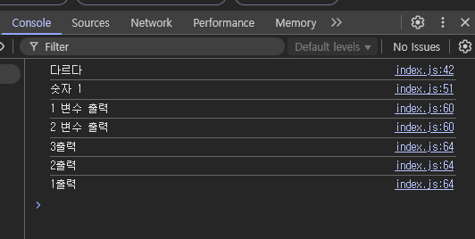
변수, 타입, 연산자 활용하기
변수 선언, 데이터 타입 확인, 다양한 연산자 사용 예제를 포함한 자바스크립트 코드를 작성합니다.
변수 선언과 데이터 타입 확인, 다양한 연산자 사용 예제를 포함한 자바스크립트 코드 파일과 결과 스크린샷을 제출합니다.
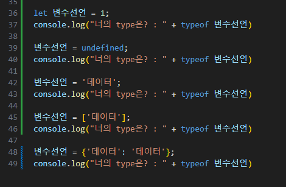
제어문-반복문 이해하기
반복문은 특정 코드를 여러 번 실행하는 데 사용됩니다.
for, break, continue를 활용한 코드를 작성합니다. for, break, continue 코드를 제출합니다.
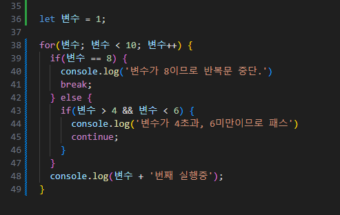
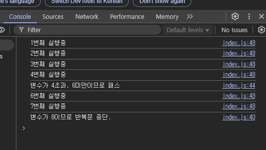
제어몬-조건문 이해하기
조건문은 프로그램의 흐름을 제어하기 위한 중요한 구조입니다.
if-else 조건문을 사용한 코드를 작성합니다. if-else 조건문 코드를 제출합니다.
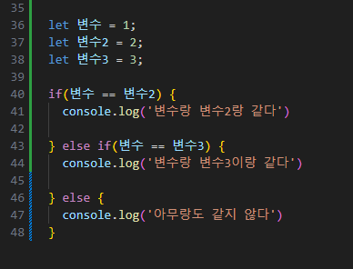
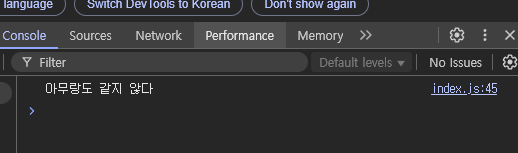
제어문-순차문 이해하기
순차문은 코드가 위에서 아래로 순서대로 실행되는 기본적인 제어문입니다
현재 나이를 입력 받아 n년 후 나이를 출력하는 코드를 작성합니다. 입력 → 처리 → 출력 과정을 포함한 코드를 제출합니다.
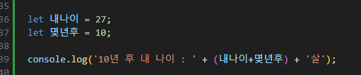
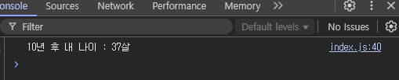
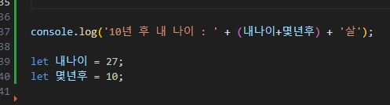
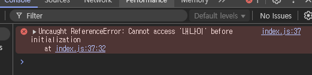